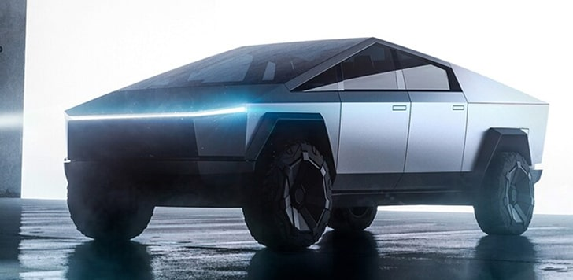
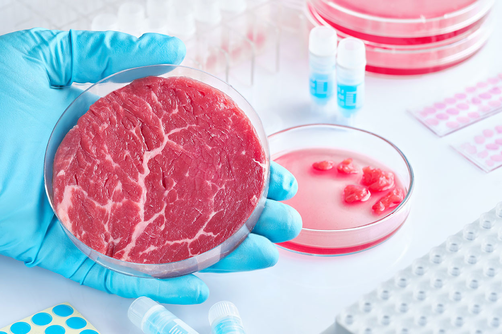

Yapay zeka alanında devrim niteliğinde bir gelişme yaşandı...
Çinli yapay zeka (YZ) girişimi DeepSeek, uygulama indirme listelerinde zirveye yerleşip ABD teknoloji hisselerinin düşmesine neden olduktan sonra dünya çapında manşetlere taşındı.
Ocak ayında, ChatGPT üreticisi OpenAI tarafından geliştirilen teknolojiyle yetenekleri bakımından rekabet edebildiğini ve maliyetinin çok daha düşük olduğunu söylediği son modeli DeepSeek R1'i piyasaya sürdü.
Popülaritesi ve potansiyeli yatırımcıları sarstı, çip devi Nvidia'nın piyasa değerinden milyarlarca dolar silinmesine neden oldu ve birçok kişinin varsaydığı gibi, Amerikan şirketlerinin gelişen yapay zeka (YZ) pazarına hakim olup olmayacakları sorusunu gündeme getirdi.
Yeni Elektrikli Araç Tanıtıldı

Elektrikli otomobil piyasasında devrim yaratacak yeni model...
Otomotiv devi Tesla, yeni modeli Tesla Model Z'yi tanıttı. Model Z, 1000 km menzil sunarak sektörde büyük bir yankı uyandırdı.
Yeni batarya teknolojisi ile daha hızlı şarj edilebilen bu model, çevreci ve ekonomik yapısıyla dikkat çekiyor.
Şirket CEO’su Elon Musk, "Bu model ile sürdürülebilir geleceğe bir adım daha yaklaşıyoruz" dedi.
Yapay Et Piyasasında Büyük Gelişme

Laboratuvar ortamında üretilen etler market raflarına çıkıyor...
Gıda teknolojileri alanında faaliyet gösteren Future Foods, ilk ticari yapay et ürünlerini piyasaya sundu.
Bu yeni üretim yöntemi, hayvancılık endüstrisinin çevresel etkilerini azaltmayı hedefliyor.
Uzmanlar, yapay etin gelecekte protein ihtiyacını karşılamak için önemli bir alternatif olabileceğini belirtiyor.